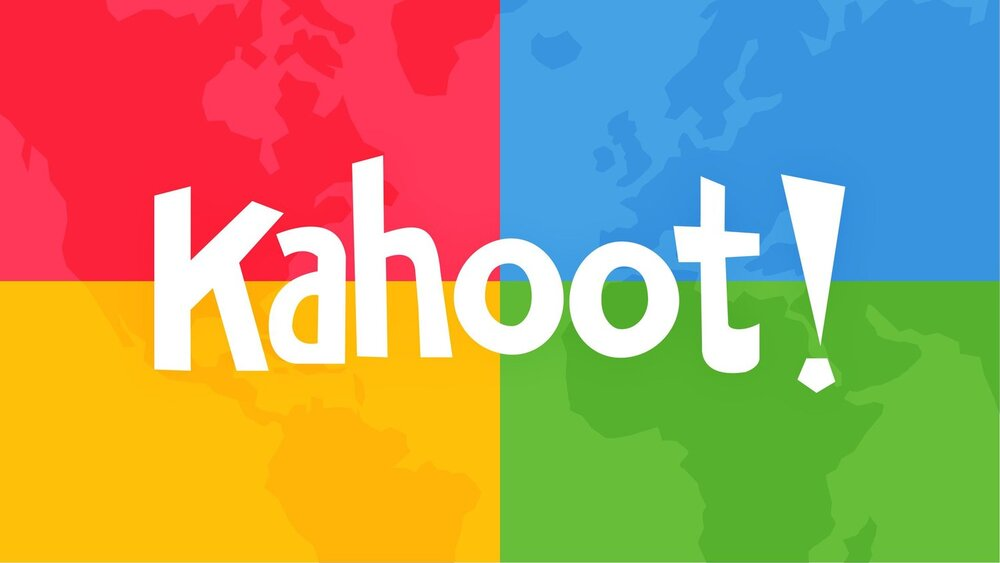

Área do Professor
Ferramentas para o professor
Classroom : Google Sala de Aula, também conhecido como Google Classroom em inglês, é uma plataforma de aprendizagem on-line desenvolvida pelo Google. Ela foi projetada para auxiliar educadores e alunos na criação, distribuição e gerenciamento de atividades educacionais.
Meet : Google Meet, também conhecido como Google Meet, é uma plataforma de videoconferência desenvolvida pelo Google. É uma ferramenta de comunicação e colaboração online que permite que as pessoas realizem reuniões virtuais, videochamadas e conferências de áudio.

Mentimeter : É uma plataforma online de
apresentações interativas que permite que os usuários criem e apresentem apresentações e enquetes em tempo
real. A plataforma é usada para envolver a audiência em apresentações e obter feedback em tempo real. Os
usuários podem criar enquetes e pesquisas, perguntas abertas ou fechadas e outros tipos de interações em
tempo real. As apresentações podem ser personalizadas com gráficos e imagens para torná-las mais atraentes
para a audiência.

Quiz
Quiz é um jogo de perguntas e respostas em que os jogadores tentam responder corretamente a uma série de perguntas em um determinado período de tempo. Geralmente, as perguntas em um quiz são organizadas em categorias e são projetadas para testar o conhecimento dos jogadores em uma determinada área de assunto, como história, geografia, esportes, música ou entretenimento.
Exemplos de Quiz Gratuitos
Kahoot : Este site permite que os professores criem
jogos educacionais personalizados para seus alunos. Os jogos podem ser jogados em sala de aula ou online, e
são projetados para ajudar os alunos a estudar e revisar informações de uma forma divertida e interativa. Os
jogos podem ser adaptados para uma ampla variedade de assuntos e níveis de habilidade.

Socrative : É uma plataforma de aprendizagem interativa e avaliação em tempo real projetada para educadores e alunos. Ele permite que os professores criem questionários, avaliações e atividades interativas que os alunos possam responder usando seus dispositivos móveis, como smartphones, tablets ou laptops.